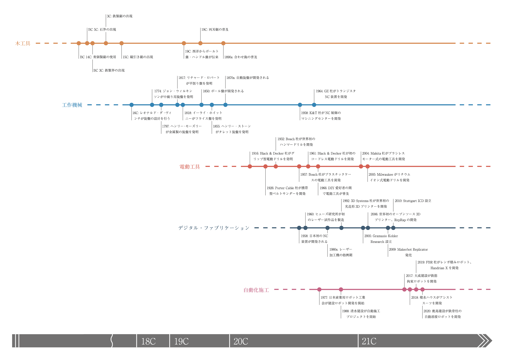

Tools For Making
home
about
contact
本サイトは、現代の建設産業において用いられている「ものをつくるための道具」を体系的にまとめたものです。
プロ向けのものから一般向けのものまで、市販品から独自開発のものまで、職人の工具から工作機械、自動化施工、そしてデジタル・ファブリケーションにいたるまでの施工ツールをフラットに扱っています。
「技術の転換」ではなく「技術の蓄積」を視覚化し、ものづくりの目的に合わせて必要な道具を効果的に選択するための指標づくりを目指します。
